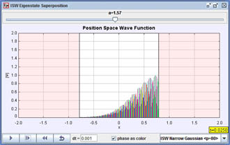

[Screen shot of an ISW superposition state that as it hits one side of the well.]
You can access the pre-set initial states for the infinite square well (ISW) via the textbox on the lower-left-hand side of the main simulation panel. These show:
- ISW Two State: Loads an ISW two-state superposition (equal mix of ground state and first-excited state).
- ISW Gaussian: Loads an ISW initial Gaussian wave packet with no initial average momentum.
- ISW Narrow Gaussian <p>0 = 0: Loads an ISW initial Gaussian wave packet with no initial average momentum.
- ISW Narrow Gaussian <p>0 = 80 π/a: Loads an ISW initial Gaussian wave packet with an initial average momentum.
1. Given the default infinite square well width of a
= 1.57 = π/2, what are the ground-state and
first-excited-state energies? Recall that we have scaled the problem such
that ħ = m = 1.
2. Since the time dependence of energy eigenstates is just, e-iEnt/ħ,
how long does it take the ground state and the first-excited state to evolve in
time back to their t = 0 values? In other words, with what period do
these states oscillate with time? Once you have these values compare them to
each other.
3. Now select the ISW Two State and set the dt to the ground state period
divided by 10. The text field can accept simple mathematical operations
such as /, *, pi, etc. Single step through the simulation and see if the wave
function indeed has the same period as you calculated in Question 2. Now
set the dt to the ground state period divided by 3 and run the
simulation. Single step through the simulation and describe the the wave
function at these times. Why does this occur? What odes this result mean for the
period of expectation values of x, <x>?
4. Now select one of the ISW Gaussian wave packets (ISW Gaussian, ISW
Narrow Gaussian <p>0 = 0, ISW Narrow Gaussian <p>0 = 80 π/a) from the drop down menu.
First look at all three wave packets. Describe the similarities and differences
between the packets' initial shapes. Choose one packet and set the dt to
the ground state period divided by 100 and run the simulation. Describe the
motion of each wave packet. Which packet initially behaves like a particle in a
classical infinite square well?
5. Now set the dt to the ground state period divided by 10 and single
step through the simulation. What do you notice about the wave function at these
times? Now set dt to the ground state period divided by 4, then 3 and
single step through the simulation. Again describe what do you notice about the
wave function at these times.